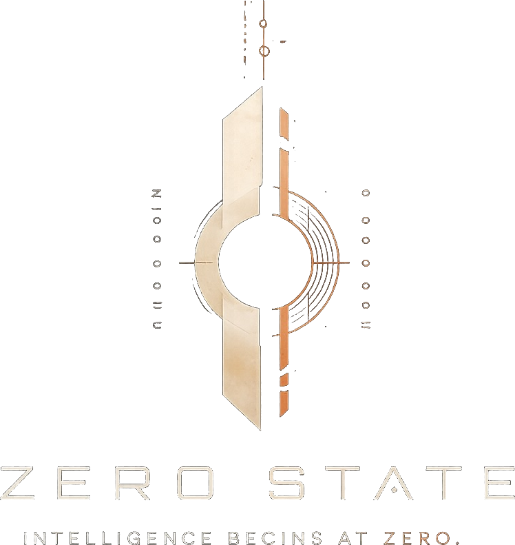
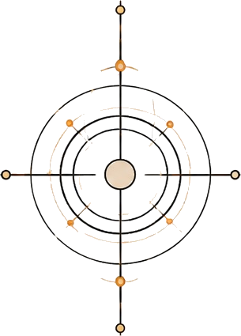

Independent software studio · concept surface
The world moves.The reference remains.
We build thoughtful, adaptable software by returning to first principles—then combining the tools already here in ways that weren’t obvious before.
Primary identity

IntelligenceBegins at zero
Position
Not another layer of noise.
Not technology for its own sake.
A clear frame for what comes next.
Zero State is the willingness to return to first principles as conditions change. We preserve what remains true, discard what no longer serves, and build from there.
One state.
Four expressions.
Four marks from the original identity suite. Below: mark name · what it holds in the system.
-

-

-

-

Systems in motion.
Products are not claims. They are evidence of the method under pressure—aligned with the live portfolio.
See clearly.
Build deliberately.
-
Creativity
Perceives possibility and gives it form.
-
Curiosity
Finds what inherited assumptions cannot explain.
-
Authenticity
Keeps perception, judgment, expression, and action coherent.
Return to zero. Begin again.
Start a conversationThe tools are already here.